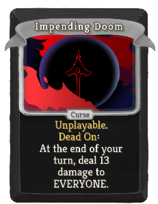
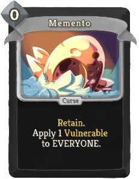
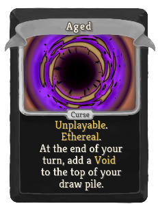
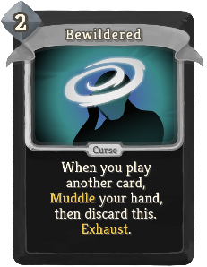
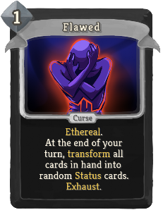
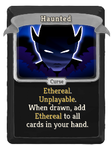
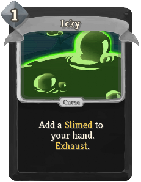
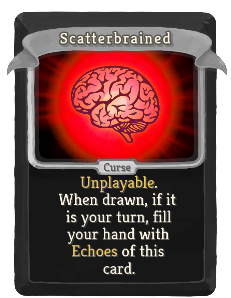

| Name | Image | Upgraded image | Rarity | Type | Cost | Description | Mod |
|---|---|---|---|---|---|---|---|
| Impending Doom |  | Special | Curse | Unplayable. hermit:Dead_On: At the end of your turn, deal 13 damage to EVERYONE. | Downfall | ||
| Memento |  | Special | Curse | 0 | Retain. Apply 1 Vulnerable to EVERYONE. | Downfall | |
| Aged |  | Curse | Curse | Unplayable. Ethereal. At the end of your turn, add a Void to the top of your draw pile. | Downfall | ||
| Bewildered |  | Curse | Curse | 2 | When you play another card, sneckomod:Muddle your hand, then discard this. Exhaust. | Downfall | |
| Flawed |  | Curse | Curse | 1 | Ethereal. At the end of your turn, transform all cards in hand into random Status cards. Exhaust. | Downfall | |
| Haunted |  | Curse | Curse | Ethereal. Unplayable. When drawn, add Ethereal to all cards in your hand. | Downfall | ||
| Icky |  | Curse | Curse | 1 | Gain a Slimed. Exhaust. | Downfall | |
| Scatterbrained |  | Curse | Curse | Unplayable. When drawn, if it is your turn, fill your hand with gremlin:Echoes of this card. | Downfall |
{kind=link}
{kind=link}
{kind=link}
{kind=link}
{kind=link}
{kind=link}
{kind=link}
{kind=link}